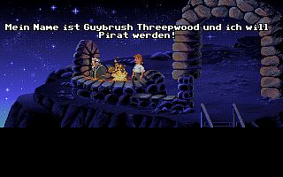
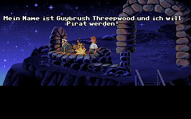

The Secret of Monkey Island
Guybrush Threepwood, ein junger, naiver Schnösel, möchte Pirat werden und befindet sich auf Mêlée Island, der ultimativen Pirateninsel! Nach einem ersten Gespräch mit dem blinden Späher (und einer ersten Verdrehung seines Namens, der noch viele folgen werden) begibt er sich in die SCUMM Bar, wiederum die ultimative Piratenbar ;). Mein Name ist Guybrush Threepwood und ich möchte Pirat werden! Hier erfährt er erstmal, warum alle Piraten auf der Insel hocken und nicht rauben, entern und piratern: Geisterpirat LeChuck treibt auf der See sein Unwesen, und mit dem ist nicht zu spaßen. Das will unser Guybrush ja auch gar nicht, jedenfalls glaubt er das. Erstmal will er selbst Pirat werden und redet mit den 3 schrecklich wichtigen selbigen. Danach übt er sich brav in Schatzsuche, Diebstahl und Schwertkampf. In einer peinlichen Situation lernt er dann auch die Gouverneurin Elaine Marley kennen und verliebt sich prompt in sie. Ach, wenn er doch nur mit Frauen reden könnte... Nachdem Guybrush die 3 Prüfungen absolviert hat, sieht er sich schon auf See, mit Tonnen von Schätzen in der Schatzkammer...doch eine Nachricht verbreitet sich auf Melée Island: LeChuck hat Gouvernourin Marley entführt, um sie zu seiner untoten Königin zu machen. Es wird Guybrush klar, daß er Elaine wirklich liebt und sie (zum ersten Mal) retten muß...
Voilà, der erste Teil der Monkey Island Trilogie. Immer noch eines meiner Lieblingsspiele. OK, die Grafik...Standard von 1990, nicht von heute. Doch was macht das schon? Ich bin immer noch begeistert davon. Ein wunderbares Adventure. Die Rätsel spannend, das Spiel nicht brutal oder versaut (und trotzdem oh Wunder, witzig). Ja, der Humor ist ein wichtiger guter Punkt der in der Monkey Island Trilogie hervorzuheben ist! Immer wieder kommen kleinere oder größere Secrets und Gags (mitunter von anderen LucasArts-Spielen), an denen man nach mehreren Malen spielen immer noch Spaß hat. Trotzdem bleibt das Rätsel schwer und knifflig, was Adventure Fans auch freuen wird. Ein Wermutstropfen dazu: Ich hätte mir mehr Musik gewünscht...
 
Screenshots(10)

Screenshots(10)
Fakten & Co.
- Erschienen: 1990
- Altersempfehlung: ab 12
-
Systemanforderungen
286er
540 kb RAM
Bewertung
5/5 Sternen
5/5 Sternen